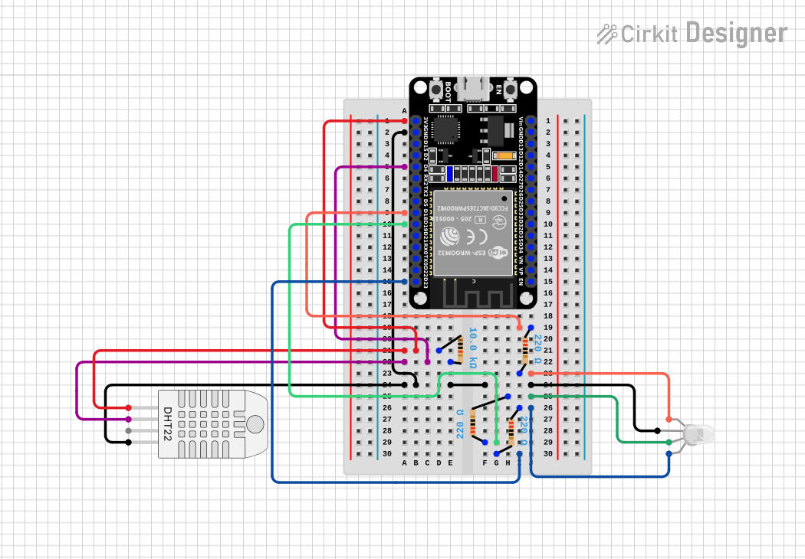

Home Automation with ESP32
Build a Humidity-to-Color Display
4-Hour Hardware Camp
by Brendon Thiede
Welcome!
Today you build a real circuit with a real microcontroller…
…and you take it home.
Here's the Goal
By the end of camp, this is yours.
Icebreaker
Name one thing in your home you wish was smarter or did something automatically.
Meet Lansing Techster
Your curious co-builder for the day. 🤖
Techster doesn't know everything either — we figure it out together. Momentum over perfection.
Today's Roadmap
| 0:00–0:45 | Welcome + what is home automation? |
| 0:45–1:10 | Meet the hardware |
| 1:10–1:45 | 🔧 Build & upload your first code |
| 1:45–2:00 | ☕ Break |
| 2:00–3:30 | 🔧 Sensor → LED → full project |
| 3:30–3:40 | ☕ Break |
| 3:40–4:00 | 🔧 Make it yours + show & tell |
Most of today is hands-on building.
What Is Home Automation?
Making things in your home sense, decide, and act — without you doing it by hand.
Real Examples
- Smart thermostat (Nest)
- Color-changing lights (Philips Hue)
- Motion-sensor porch lights
- Smart door locks
What do these all have in common?
What Makes Something "Smart"?
Sensor → Logic → Output
Something it can feel → a rule → something it does.
Today's Three Pieces
💧 DHT22 sensor (humidity)
↓
🧠 ESP32 brain
↓
🔴🟢🔵 RGB LED output
Meet the Hardware
Pick up each part as we talk about it — but don't wire anything yet.
Your Kit
The Breadboard
No soldering — parts just push in. The rows secretly connect for you.
The ESP32 — Our Brain
A tiny, cheap, programmable computer — about $6.
The DHT22 — Our Sense of Touch
Reads humidity (and temperature too) — breathe on it and the humidity jumps.
The RGB LED — Our Output
One LED, three colors inside. Mix them to make any color.
Resistors
- 3 × 220 Ω — one for each LED color (protects the LED)
- 1 × 10 kΩ — helps the DHT22 talk clearly (a "pull-up")
Resistors slow electricity down so we don't burn parts out.
⚠️ Safety Rules
- Unplug USB before changing wires
- Check your work, then plug in
- Never feed 5 V into a GPIO pin — we only use 3V3 here
- Ask before you're unsure. Always.
🔧 Build #1
Seat the board & upload your first code
~70 minutes in — time to build.
Step 1 — Seat the ESP32
Step 2 — Plug In
No external wires for this step — the LED we blink is already on the board (GPIO 2).
Step 3 — Open the Project
- Open VS Code → PlatformIO
- Open the
onboard-LED-blinkproject - Peek at
platformio.iniandsrc/main.cpp
The Code
const int LED_PIN = 2; // the LED already on the board
void setup() {
pinMode(LED_PIN, OUTPUT);
Serial.begin(115200);
}
void loop() {
digitalWrite(LED_PIN, HIGH); // on
Serial.println("LED ON");
delay(500);
digitalWrite(LED_PIN, LOW); // off
Serial.println("LED OFF");
delay(500);
}
✅ Milestone Check
Everyone's onboard LED is blinking and Serial Monitor scrolls "LED ON / LED OFF".
Stuck? Wrong COM port, missing CP210x driver, or baud rate not 115200.
☕ Break — 15 min
Stretch, water, walk around.
Leave your board plugged in and happy.
🔧 Build #2
Wire the DHT22 & read the room
Pins We'll Use
| DHT22 pin | Connects to |
|---|---|
| VCC | 3V3 |
| DATA | GPIO 4 + 10 kΩ pull-up to 3V3 |
| NC | leave empty |
| GND | GND |
Wiring Diagram
Why the 10 kΩ Resistor?
Our bare DHT22 has no built-in pull-up. Without that 10 kΩ bridge from DATA to 3V3, you'll get read errors.
It keeps the data line "held high" so the sensor's signal is clear.
The Code
#include <DHT.h>
#define DHTPIN 4
#define DHTTYPE DHT22
DHT dht(DHTPIN, DHTTYPE);
void setup() {
Serial.begin(115200);
dht.begin();
}
void loop() {
float humidity = dht.readHumidity();
float tempC = dht.readTemperature();
if (isnan(humidity) || isnan(tempC)) {
Serial.println("Read failed - check wiring!");
return;
}
Serial.print("Humidity: "); Serial.print(humidity);
Serial.print("% Temp: "); Serial.print(tempC);
Serial.println("C");
delay(2000);
}
✅ Milestone Check
Real humidity & temperature numbers scroll in Serial Monitor.
Breathe on the sensor — watch humidity jump!
🔧 Build #3
Add the RGB LED & make it glow
Pins We'll Use
| LED leg | Connects to |
|---|---|
| Red | 220 Ω → GPIO 18 |
| Common cathode (longest) | GND |
| Green | 220 Ω → GPIO 19 |
| Blue | 220 Ω → GPIO 23 |
Resistor goes in series with each color leg — never on the cathode/GND leg.
Wiring Diagram
Mixing Color with PWM
const int RED_PIN = 18, GREEN_PIN = 19, BLUE_PIN = 23;
void setColor(int red, int green, int blue) {
ledcWrite(0, red); // 0–255 brightness per channel
ledcWrite(1, green);
ledcWrite(2, blue);
}
void setup() {
ledcSetup(0, 5000, 8); ledcAttachPin(RED_PIN, 0);
ledcSetup(1, 5000, 8); ledcAttachPin(GREEN_PIN, 1);
ledcSetup(2, 5000, 8); ledcAttachPin(BLUE_PIN, 2);
}
PWM = blinking faster than your eye can see, to fake "half brightness."
Test One Color at a Time
Before mixing — prove each channel works:
setColor(255, 0, 0); delay(700); // red only
setColor(0, 255, 0); delay(700); // green only
setColor(0, 0, 255); delay(700); // blue only
The starter firmware runs this R→G→B self-test on startup for you.
✅ Milestone Check
Red, green, and blue each light up on their own.
Green/blue look dim? That's expected — we can swap them to 150 Ω later.
🔧 Build #4
Put it all together
Sensor reading → color logic → glowing LED, in one loop.
The Full Circuit

Reference schematic. Yours can look messier — as long as the connections match!
Optional: A Cleaner Photo
Color Logic (Humidity Mode)
float humidity = dht.readHumidity();
if (humidity < 30) {
setColor(255, 0, 0); // Red - very dry
} else if (humidity < 50) {
setColor(255, 255, 0); // Yellow - dry side
} else if (humidity < 70) {
setColor(0, 255, 0); // Green - comfortable
} else {
setColor(0, 0, 255); // Blue - very humid
}
Humidity is the default — you can change it instantly by breathing on the sensor.
The Color Map
| Humidity | Color | Vibe |
|---|---|---|
| Below 30% | 🔴 Red | Very dry |
| 30–50% | 🟡 Yellow | Dry side |
| 50–70% | 🟢 Green | Comfortable |
| Above 70% | 🔵 Blue | Very humid |
One line switches it to temperature mode instead.
Common Bugs
- Wrong pin numbers (18/19/23 vs the wire)
- Cathode vs anode mixed up (longest leg → GND)
- DHT library not installed
- Read returns
NaN→ check the 10 kΩ pull-up
✅ Big Milestone
Breathe on the sensor → your LED changes color.
🎉 You built a working sensor-driven device.
☕ Break — 15 min
Stretch, water, walk around. Almost there.
🔧 Make It Yours
Pick one (or more!) to experiment with.
Easy Tweaks
- Change the humidity (or temp) thresholds
- Pick your own colors for each range
- Print a custom message:
"Maya's room: HUMID" - Make mixed colors — orange, purple, teal
Stretch Goals
- Smooth fade between colors instead of snapping
- Switch from humidity mode to temperature mode
- Watch the value on the Serial Plotter
- Big one: connect WiFi and POST your reading to a webhook
Mixing Colors Cheat Sheet
setColor(255, 128, 0); // orange
setColor(128, 0, 255); // purple
setColor(0, 255, 255); // teal/cyan
setColor(255, 255, 255); // white-ish
Show & Tell
Who wants to demo their color map?
Taking It Home
Any USB power bank or phone charger runs it — no laptop needed.
What You Did Today
- Wired a real circuit on a breadboard
- Uploaded your own code to a microcontroller
- Read a live sensor and drove an LED with PWM
- Built something you understand — and can keep building
Keep Going
Check the Next Steps page for project ideas, and the Glossary if a word was new.

Thank you!